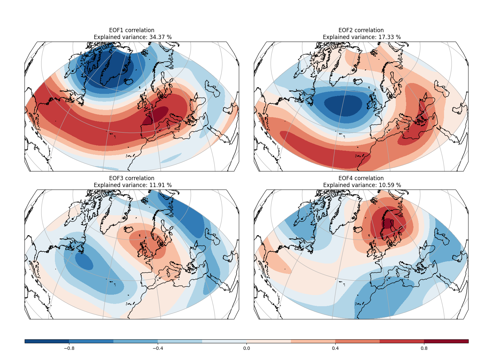

Weighting · Metodología
Metodología de ponderación EOF + PLS
Esquema del proceso, modos de variabilidad y cálculo de pesos del ensemble.
1 · Modos de variabilidad: EOF o PLS
Los patrones de circulación a gran escala del sector Euro-Atlántico modulan fuertemente la predictibilidad estacional sobre la Península Ibérica. Estos modos de variabilidad presentan a menudo una mayor capacidad predictiva que las propias variables objetivo (T2M, precipitación), lo que los convierte en una componente esencial de las estrategias de postproceso.
Se utilizan dos enfoques distintos para extraer estos modos:
- Modos basados en EOF: calculados a partir de anomalías de MSLP de ERA5 sobre el sector Atlántico-Norte–Europa (90°W–60°E, 20°–85°N). Las cuatro primeras EOFs capturan los principales patrones de teleconexión euro-atlánticos — NAO, EA, EAWR y SCA — que influyen sobre la temperatura y precipitación en Iberia.
- Modos basados en PLS: teleconexiones dirigidas obtenidas mediante regresión Partial Least Squares (PLS). Las anomalías de MSLP actúan como predictores, mientras que las anomalías de temperatura (T2M) o precipitación (PR) sobre Iberia se utilizan como predictandos. Estos modos optimizan los patrones de circulación más relevantes para cada variable de superficie, mejorando el skill en temperatura durante la estación cálida (AMJ–ASO).

La metodología PLS y su aplicación a la ponderación estacional de ensemble se describen en detalle en «Targeted Teleconnections and their Application to the Postprocessing of Climate Predictions» de Clementine Dalelane (2025).
2 · Ponderación de miembros del ensemble
La ponderación del ensemble asigna mayor peso a aquellos miembros cuya fase de circulación (proyección sobre los modos EOF o PLS) es más cercana a la observada o predicha. Este marco generaliza el submuestreo (ponderación 0/1) y mejora la consistencia dinámica, especialmente para los patrones invernales relacionados con la NAO.
La mejora alcanzable mediante la ponderación depende de dos factores:
- Cuánta varianza de la variable objetivo (T2M, PR) está explicada por los modos.
- Con qué precisión pueden predecirse los propios modos.
La ponderación basada en EOF mejora las predicciones de T2M y PR en invierno y comienzos de primavera, mientras que los modos basados en PLS aportan valor añadido para las predicciones de temperatura en la estación cálida. La precipitación se beneficia menos en verano debido a su carácter convectivo y de escala local.